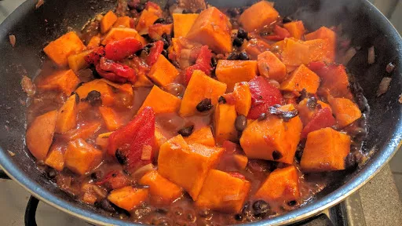

Jerk sweet potato & black bean curry

Serve your vegetable curry Caribbean style, flavoured with thyme, jerk seasoning and red peppers - great with rice and peas.
Servings: 10
Total: 1 hr 35 mins
Ingredients
- 2 onion, 1 diced, 1 roughly chopped
- 2 tbsp sunflower oil
- 50 g ginger, roughly chopped
- small bunch coriander, leaves and stalks separated
- 3 tbsp jerk seasoning
- 2 sprigs thyme
- 400 g can chopped tomatoes
- 4 tbsp red wine vinegar
- 3 tbsp demerara sugar
- 2 vegetable stock cubes, crumbled
- 1 kg sweet potatoes, peeled and cut into chunks
- 2x 400 g cans black beans, rinsed and drained
- 450 g jar roasted red pepper, cut into thick slices
Instructions
- Gently soften the diced
onion2
in the sunflower oil2 tbsp
in a big pan or casserole.
- Meanwhile, whizz together the roughly chopped
onion2
, ginger50 g
, coriandersmall bunch
stalks and jerk seasoning3 tbsp
with a hand-held blender. Add to the softened onion2
and fry until fragrant. Stir in the thyme2 sprigs
, chopped tomatoes400 g can
, vinegar4 tbsp
, sugar3 tbsp
and stock cubes2
with 600ml water and bring to a simmer. Simmer for 10 mins, then drop in the sweet potatoes1 kg
and simmer for 10 mins more. Stir in the beans2x 400 g cans
, peppers450 g
and some seasoning, and simmer for another 5 mins until the potatoes are almost tender. Cool and chill for up to 2 days.
- To serve, gently heat through on the hob. Roughly chop most of the
coriandersmall bunch
leaves and stir in, then serve scattered with the remaining leaves.
-
kcal
209
-
fat
3 g
-
saturates
1 g
-
carbs
39 g
-
sugar
14 g
-
fibre
7 g
-
protein
6 g
-
salt
0.7 g
www.bbcgoodfood.com
Short Link
Long Link

 Vegetarian
Vegetarian Vegan
Vegan